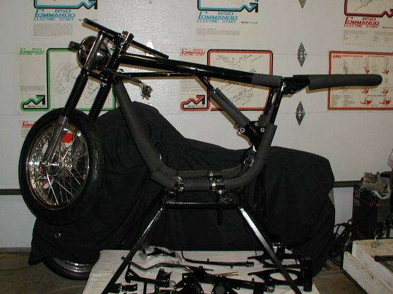
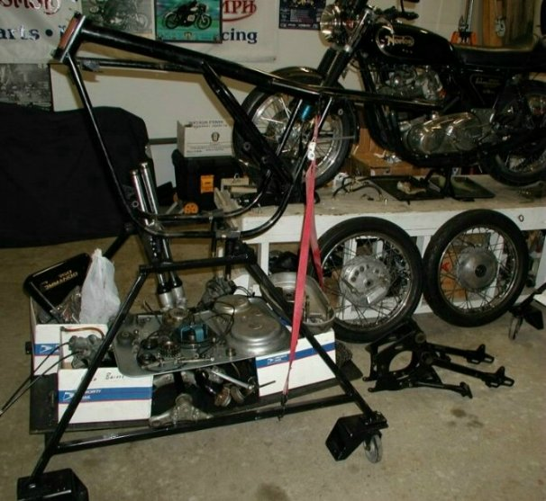

Do a Frame up Restoration
Or
Have Old Britts Build You a New Commando
Last Updated 01/24/05
This will be a series of articles that shows how to build a new Commando or restore your Commando. We will be building a new custom Commando and restoring a 1971 Commando. As we build/restore these bikes we will keep track of all the costs (parts, labor and services) and publish a running total along with documenting each step. We will only document things that are not covered in the Norton Shop Manual (Part # 06-5146) or where we do things differently than the manual. We are listing each step as a group. They are not the same groups as listed in the factory parts manuals, but the way we want to build/restore these bikes. Labor hours will be denoted with "(hours)" in the description line.
Even though we are only going to build two bikes, we will be keeping track of the costs for the following:
- Custom - Building a new special Commando.
- Stock - Building a new Commando as close to stock as possible.
- Restoration - Doing a frame up restoration.
We will be offering kit discounts by groups and they will be listed for each group. The discounts only apply when you purchase all the items in that group. You do not have to purchase the labor hours to qualify for the kit discount. This lets you take advantage of kit pricing without having to purchase all groups and lets you purchase just the group you want to work on. Some small groups will not have kit discounts listed, kit discounts for those groups will apply if you have or will be purchasing any other group that does have kit discounts listed.
The running dollar totals are the kit discounted prices and labor dollars, labor only for the Custom and Stock bikes. If you will be doing your own work, disregard the labor dollar amounts. If you purchase pre-assembled groups (e.g., wheels, engine, gearbox, etc.), the labor amounts will apply. You can substitute parts, (like different size rims or tires, upgraded parts, etc.) in a group and still qualify for the kit discount as long as the group is basically intact.
Our Custom Commando parts list will differ from the Stock Commando in areas like stainless steel parts, different controls, lights, wheels, head steady, etc. More labor will go into detailing some parts that are not required, but will help set the bike off from a stock Commando.
The Stock Commando will use as many Andover Norton parts as possible, but will incorporate modern electronics and some after-market components that are no longer available through Andover.
For the restoration costs, we will be assuming that you are starting with a very poor basket case and will replace all but the major components. We are also assuming that the bike is fully disassembled and the parts are clean, since we will not be including labor hours to disassemble the bike or clean the parts prior to reassembling. We will have an article in the first group listing the number of hours spent in disassembling and cleaning and problems you might encounter in the disassembling process. For restoration you will have to subtract the parts that you do not need to purchase. There will not be a cost assigned to the restoration labor hours, but will be listed and should provide you with a reasonable estimate of the time to restore a Commando.
Please Note:
- Some used parts will be listed for the Custom and Stock bikes when factory or after market parts are still not available. We will change out the used parts when satisfactory parts are made available. We will be using a titled engine for our custom project bike, since we do not want to go to the trouble of getting a kit bike licensed in our state, but will cost out the parts as if new.
- The custom bike we build will be for sale after we finish it, and hopefully, when we are done the total price will be reasonable and we can sell this bike. Otherwise, Fred gets another neat Norton.
- Due to the limited time we get to spend in the shop, these two bikes will take some time to complete. We hope to have them done by the end of the summer of 2005, but even that may be optimistic.

The custom bike.

The restoration project ready for the frame modifications and powder coating preparations.
The restoration project is going to be held at this step so the little time devoted to these projects can be applied to the custom bike. We will be estimating and the cost sections for the restoration project, but they may change when the actual work continues.
| Group No. | Description | Link to articles | Link to detailed costs | Group to-date cost |
| 1 | Preparing the frame and other related parts for Powder Coating or painting and assembling them on a bike stand. | Custom Stock Restoration |
2,251.05
2,245.61 0.00 | |
| 2 | Building the front wheel | Custom Stock Restoration |
2,049.58
1,531.69 916.78 | |
| 3 | Building the rear wheel | Custom Stock Restoration |
2,672.13
2,299.97 1,307.23 | |
| 4 | Assembling the front end | Custom Stock Restoration |
2,069.67
1,241.41 404.97 | |
| 5 | Assemble Engine Mounts and Build Rear End | Custom Stock Restoration |
675.12
0.00 0.00 | |
| 6 | Build and Assemble Discs and Calipers | Custom Stock Restoration |
0.00
0.00 0.00 | |
| 7 | Z Brackets, Foot Pegs, Battery Tray, Stands | Custom Stock Restoration |
0.00
0.00 0.00 | |
| 8 | Building the Gearbox | Custom Stock Restoration |
3,105.28
0.00 0.00 | |
| 9 | Building the Engine | Custom Stock Restoration |
0.00
0.00 0.00 | |
| 10 | Installing the gearbox and engine | Custom Stock Restoration |
0.00
0.00 0.00 | |
| 11 | Primary Drive and Cases, Clutch | Custom Stock Restoration |
0.00
0.00 0.00 | |
| 12 | Oil Tank and Oil Lines | Custom Stock Restoration |
0.00
0.00 0.00 | |
| 13 | Exhaust System | Custom Stock Restoration |
0.00
0.00 0.00 | |
| 14 | Wiring, Lights, Switches & Controls | Custom Stock Restoration |
0.00
0.00 0.00 | |
| 15 | Carburetors and Air Cleaners | Custom Stock Restoration |
0.00
0.00 0.00 | |
| 16 | Seat, Tank, and final assembly | Custom Stock Restoration |
0.00
0.00 0.00 |


| Total savings if purchased as a kit: | Custom Stock Restoration |
1,648.20
907.48 194.29 |
Total kit costs: | Custom Stock Restoration |
12,822.82
7,318.68 2,628.98 |
This page was written and designed by F. H. Eaton & Associates if you have any questions or comments please contact us at info@fheaton.com